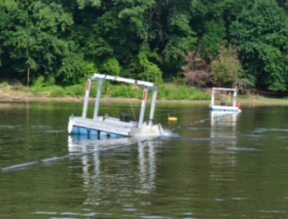

Using seismic water guns for Asian Carp control efforts

Seismic water guns emit pulses of acoustic energy which fish, including bighead carp and silver carp, have been shown to move away from. Water guns may be useful to deter/deny access by bighead carp and silver carp to off-channel refuge areas or to create static barriers to fish movement. At present, how bighead carp and silver carp in rivers with existing populations respond to water gun operation, as well as the potential impacts to underwater structures such as canal walls, isn’t fully understood. Research is being conducted to investigate whether water guns alter the behavior of bighead carp and silver carp in rivers and backwaters and to assess the energy (pressure) transferred to in-water navigation structures.
Water guns are being placed in backwater habitats where bighead carp and silver carp currently are to see if they can be used to deny fish access to these preferred off-channel habitats or trap them in areas where they can be captured and removed. The energy emitted from water guns is being measured to determine the risk associated with water gun operation near navigation structures. These research topics are being investigated under laboratory (USGS Upper Midwest Environmental Sciences Center, La Crosse, WI) and field conditions (for example, a backwater area of the Illinois River near Morris, IL).
If water guns alter the behavior of bighead carp or silver carp then they could be deployed to deny access to off-channel refuge areas or to disrupt spawning. They could also be used to enhance efforts to capture and remove bighead carp and silver carp by commercial fishing. Measuring the sound pressure water guns create will be instrumental in determining safe operating distances and determine effective pressures to alter the behavior of bighead carp and silver carp.
- Bighead carp and silver carp have been shown to move away from water guns in experimental ponds
- The operation of water guns appears to have altered the distribution of large fish present in a backwater area of the Illinois River.
- Sound pressures from water guns have been mapped in man-made ponds and under field conditions. These data show the acoustic energy associated with water gun operation is not equally horizontally or vertically distributed.
Presentation at American Fisheries Society annual meeting in Little Rock, AK, September 8-12, 2013. Title: Response of Asian Carp to Firing of Seismic Water Guns
Presentation at the Illinois Department of Natural Resources, Monitoring and Response Work Group, January 21- 22, 2014.
Presentation at Midwest Fish and Wildlife Conference, Asian Carp Symposia, January 29, 2014. Title: Evaluation of an approach to integrated pest management of Bighead and Silver Carp
Summary report prepared for Illinois Department of Natural Resources, Monitoring and Response Work Group. Title: Water Gun Development and Testing
USGS reports of pressure data collected at Lemont, Illinois and La Crosse, Wisconsin to be published online in 2014.
Mark Gaikowski, mgaikowski@usgs.gov
Robert Gaugush, rguagush@usgs.gov
USGS-Upper Midwest Environmental Sciences Center
608-783-6451
Patrick Kocovsky, pkocovsky@usgs.gov
USGS-Great Lakes Science Center, Lake Erie Biological Station
419-625-7164
William Morrow, wsmorrow@usgs.gov
Ryan Adams, rfadams@usgs.gov
USGS-Illinois Water Science Center
217-328-9725